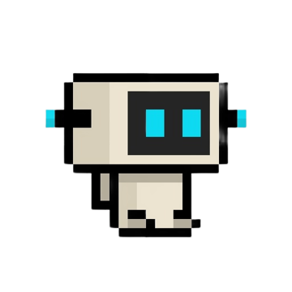

Company Knowledge First
How can we help with IT today?
Ask about VPN access, passwords, MFA, tickets and more. Answers come from the company's IT documents first, and from the web only when those fall short.
THREAD

Follow-ups use this chat's recent messages
Press Enter to send